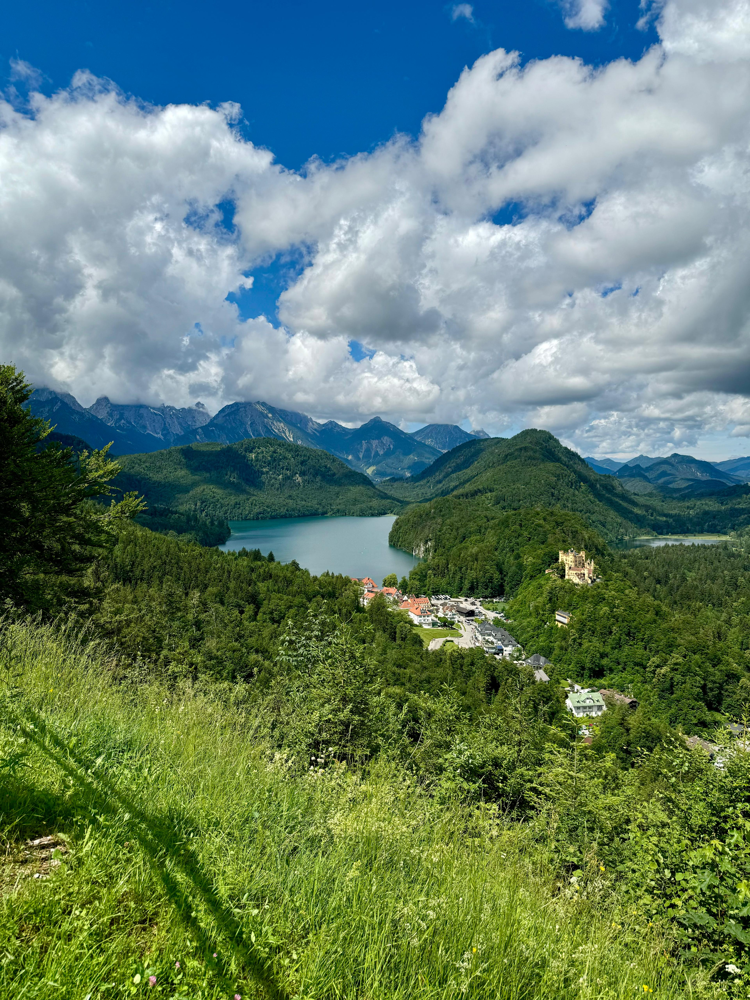

Munich
Munich, the heart of Bavaria, was an unforgettable experience...



Explore my journeys through the beautiful cities of Europe: Munich, Rome, Madrid, Lisbon, Paris, Vienna, and Salzburg.
Munich, the heart of Bavaria, was an unforgettable experience...
Rome, the Eternal City, is a dream come true...


Madrid’s mix of modern energy and historical landmarks made it an exciting stop...


Lisbon, with its hilltop viewpoints and historic neighborhoods...


Paris is the epitome of romance and culture...


Vienna, known for its classical music heritage...